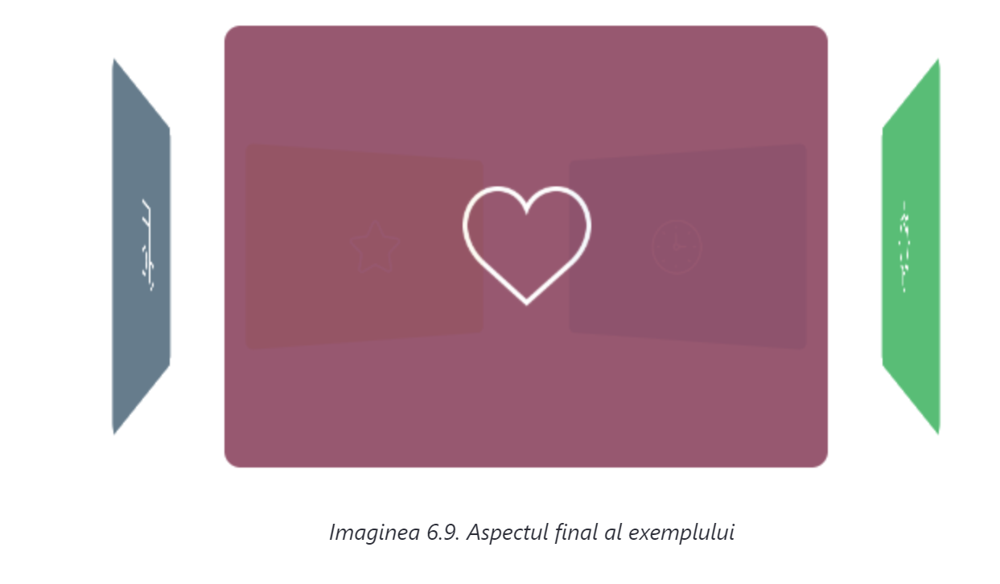

Toate aceste tehnici, prezentate în această lecţie, vor fi folosite acum ca să creăm un exemplu real. Exemplul va ilustra obţinerea unui efect interesant de carusel (carousel). Efectul final va fi ca în imaginea 6.9.
Ca să obţinem acest efect vom folosi o simplă structură HTML:
<div id="main-container">
<div id="tile-container">
<div class="tile" id="tile-1"></div>
<div class="tile" id="tile-2"></div>
<div class="tile" id="tile-3"></div>
<div class="tile" id="tile-4"></div>
<div class="tile" id="tile-5"></div>
</div>
</div>
În containerul principal (main-container) se mai găseşte încă un container (tile-container) care conţine cinci elemente div. Fiecare dintre aceste cinci elemente div reprezintă câte un dreptunghi care se văd în imaginea 6.9. Cele cinci elemente div deţin o clasă comună cu numele tile, iar fiecare este marcat şi cu atributul id cu o valoare specifică.
Ca să stilizăm elementele HTML prezentate, în aşa fel încât să obţinem un rezultat ca în imaginea 6.9., vom folosi următoarele reguli CSS:
#main-container {
perspective: 400px;
position: relative;
width: 300px;
height: 220px;
margin: 80px auto;
}
#tile-container {
transform: translateZ(-300px) rotate3d(0, 1, 0, 0deg);
transform-style: preserve-3d;
}
.tile {
width: 300px;
height: 220px;
border-radius: 8px;
position: absolute;
margin: 0 auto;
background-repeat: no-repeat;
background-position: center;
background-size: 64px;
opacity: 0.95;
}
#tile-1 {
background-image: url("img/like.png");
background-color: #914E67;
transform: rotateY(0deg) translateZ(300px);
}
#tile-2 {
background-image: url("img/idea.png");
background-color: #4FBA6F;
transform: rotateY(72deg) translateZ(300px);
}
#tile-3 {
background-image: url("img/clock.png");
background-color: #5192D2;
transform: rotateY(144deg) translateZ(300px);
}
#tile-4 {
background-image: url("img/star.png");
background-color: #E8BF1C;
transform: rotateY(216deg) translateZ(300px);
}
#tile-5 {
background-image: url("img/note.png");
background-color: #5D7586;
transform: rotateY(288deg) translateZ(300px);
}
Principalele lucruri pe care trebuie să le luăm în considerare în cadrul CSS-ului prezentat sunt: